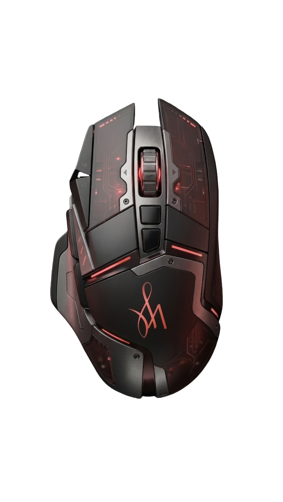

01 — Branding
Econiq
Brand strategy and visual identity for a conceptual circular economy platform — designed to feel premium rather than preachy.
XPLR arrow_outward Gayatri Patil
Gayatri Patil
And as an orchestrator of these, I strive to make sure that they are intentionally designed for the highest impact.
Choose how you'd like to explore my work:

Brand strategy and visual identity for a conceptual circular economy platform — designed to feel premium rather than preachy.
XPLR arrow_outwardA 40-page educational publication balancing scientific rigour with accessible visual communication for a parent audience.
XPLR arrow_outwardA mobile-first ecosystem bridging acute stress and professional intervention through calm UI principles and research-driven pathways.
XPLR arrow_outwardHow I work and the methodologies I bring to the table.
Build high-converting landing pages that clearly communicate value and guide users to take action.
XPLRImprove clarity, usability, and trust through research-informed website redesigns.
XPLRIdentify friction, prioritize improvements, and provide actionable recommendations backed by UX principles.
XPLRDiscover user needs and translate insights into confident product and design decisions.
XPLRCreate cohesive digital marketing assets that strengthen your brand across campaigns and channels.
XPLR